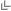

Have you noticed the buttons marking differences in the Differences viewer?
You can simply apply differences between panes, by clicking one of these chevron buttons.
Keep the Ctrl key pressed, and the chevron buttons change to . Click one of these buttons to append contents of the current pane of the Differences viewer to the other pane.
If you keep Shift pressed, the chevrons turn into . Click this button to revert changes.